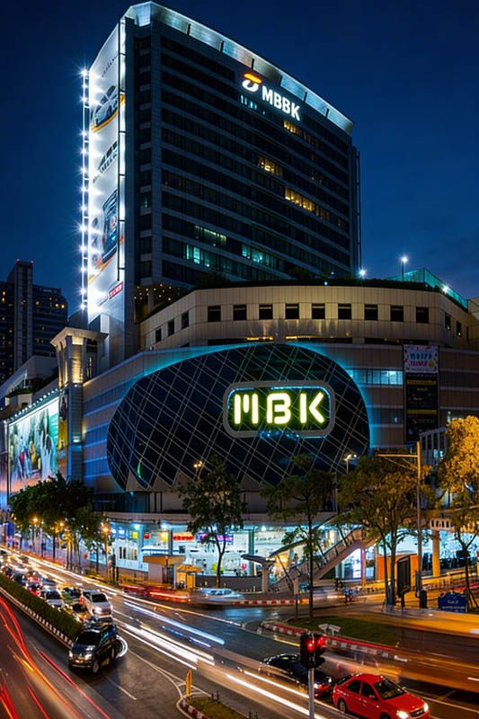
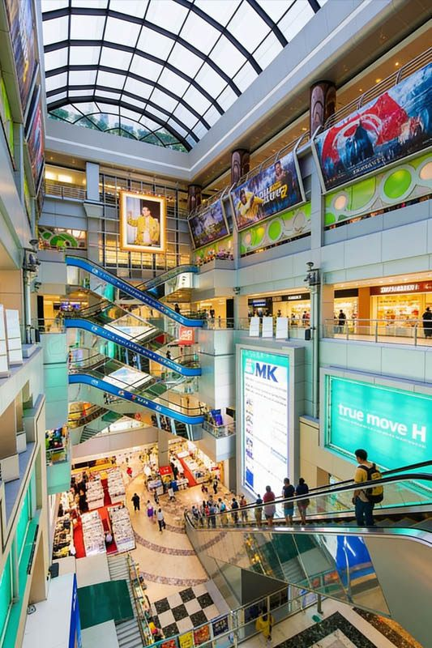

MBK Center (Mahboonkrong) is Bangkok's most iconic budget shopping destination, a legendary 8-floor mall that has been serving bargain hunters since 1985. Located just 2 BTS stops from Royal Ivory + walking Hotel and connected to National Stadium station, MBK offers an authentic Bangkok shopping experience unlike any other mall in the city.
What makes MBK Center special is its genuine local shopping atmosphere and unbeatable prices. With over 2,000 small shops, stalls, and vendors, the mall maintains the feel of a traditional Thai market while offering the convenience of air conditioning and modern facilities. It's where locals shop for electronics, fashion, and daily needs at prices that often shock first-time visitors.
For Royal Ivory Hotel guests, MBK Center provides the perfect introduction to Thai bargaining culture and budget shopping. Whether you need electronics, want to stock up on souvenirs, or simply experience how locals shop in Bangkok, MBK offers an adventure that's both entertaining and incredibly affordable.
MBK Center is easily accessible via Bangkok's BTS system with a simple transfer at Siam station. The journey places you in the heart of Bangkok's shopping district, with MBK offering a completely different experience from the luxury malls nearby.
Total Cost: 90 Baht one-way | Journey Time: 15-20 minutes | Transfers: 1 at Siam station
💡 Royal Ivory Shopping Tip: Visit MBK after exploring luxury malls like Central World or Siam Paragon to appreciate the price difference. The contrast makes MBK's bargains even more impressive. Bring cash - many vendors don't accept cards, and bargaining is cash-only.
MBK's 8 floors are organized by product categories, though the layout can feel maze-like due to the density of small shops. Understanding the floor arrangement helps navigate efficiently and find the best deals in each category.
| Floor | Main Categories | Shopping Focus | Bargaining Level |
|---|---|---|---|
| 🏢 Ground Floor | Mobile phones, accessories | Smartphones, cases, repairs | High bargaining expected |
| 📱 1st Floor | Electronics, gadgets | Computers, cameras, tech accessories | Aggressive bargaining |
| 💻 2nd Floor | Electronics continued | Audio equipment, gaming, software | Negotiate strongly |
| 👔 3rd Floor | Men's fashion, accessories | Clothes, shoes, watches, bags | Moderate bargaining |
| 👗 4th Floor | Women's fashion, beauty | Clothing, cosmetics, accessories | Moderate bargaining |
| 🎁 5th Floor | Souvenirs, gifts, handicrafts | Thai souvenirs, handicrafts, art | Expected bargaining |
| 🍽️ 6th Floor | Food court, restaurants | Thai and international food | Fixed prices |
| 🎬 7th Floor | Services, cinema, bowling | Entertainment, services | Fixed prices |

MBK Center is legendary among locals and expats for electronics shopping, particularly mobile phones, computers, and tech accessories. The concentration of electronics vendors creates intense competition, driving prices down to some of the lowest in Bangkok.
Electronics at MBK require serious bargaining skills. Vendors expect negotiation and often start with prices 50-100% higher than their actual selling price. The key is patience, comparison shopping, and walking away when necessary.
Starting position: Begin at 40-50% of asking price
Research first: Check prices online and at other shops
Bundle deals: Better prices when buying multiple items
Cash advantage: Always better prices for cash payments
Walk away tactic: Often brings vendors to lowest prices
Beyond electronics, MBK offers extensive fashion options and one of Bangkok's best souvenir selections. The upper floors provide a more relaxed shopping atmosphere with excellent variety and bargain prices on clothing and gifts.
🎁 Best Souvenir Categories:
Traditional crafts: Thai silk, wood carvings, ceramics
Buddha statues: Various sizes and materials
Elephant items: Figurines, clothing, accessories
Thai clothing: Traditional shirts, fisherman pants
Spices & food: Thai curry pastes, dried fruits
Jewelry: Silver accessories, gemstone items
Success at MBK requires understanding Thai bargaining culture. Unlike fixed-price shopping malls, MBK operates on negotiation, and vendors respect customers who bargain skillfully and respectfully.
| Product Category | Starting Position | Expected Final Price | Bargaining Intensity |
|---|---|---|---|
| 📱 Electronics | 40-50% of asking price | 60-70% of original | Aggressive bargaining |
| 👕 Fashion | 60-70% of asking price | 70-80% of original | Moderate bargaining |
| 🎁 Souvenirs | 50-60% of asking price | 65-75% of original | Expected bargaining |
| 👜 Accessories | 50-70% of asking price | 70-85% of original | Light to moderate |
🤝 Respectful Bargaining:
Be polite: Aggressive or rude behavior will end negotiations
Small purchases: Don't over-bargain for items under 200 Baht
Fair final price: Both parties should feel satisfied with the deal
Buy when agreed: Don't continue shopping after agreeing on price
From Royal Ivory Hotel: Take BTS Sukhumvit Line from Nana to Siam (2 stops), transfer to BTS Silom Line, then take to National Stadium (1 stop). MBK Center is directly connected to National Stadium station. Total journey: 15-20 minutes, 3 BTS stops.
MBK Center is open daily from 10:00 AM to 10:00 PM. Individual shops may have varying hours. The food court typically operates during mall hours. Electronics shops often open earlier and close later than other stores.
MBK Center is famous for budget electronics, mobile phones, fashion, and local shopping atmosphere. It features over 2,000 shops across 8 floors with bargaining culture, extensive food court, and authentic Bangkok retail experience at very affordable prices.
Yes, bargaining is expected and encouraged at MBK Center, especially for electronics, fashion, and souvenirs. Start at 50-60% of the asking price for electronics, and 60-70% for fashion items. Food court and fixed-price stores don't allow bargaining.
Yes, MBK is excellent for tourists seeking authentic local shopping experience and bargain prices. Floor 5 has extensive souvenir selection, the food court offers local cuisine, and electronics prices are significantly lower than tourist areas. Bring cash and be prepared to bargain.
MBK Center offers visitors a genuine glimpse into how locals shop in Bangkok. Unlike tourist-focused shopping areas, MBK maintains its authentic character, providing cultural insight along with incredible bargains.
Luxury contrast: Visit Central World first, then appreciate MBK's prices
Nearby malls: Siam Paragon and Siam Center within walking distance
Market comparison: Compare with Chatuchak Market for different shopping styles
Full day shopping: Combine multiple venues for complete Bangkok retail experience